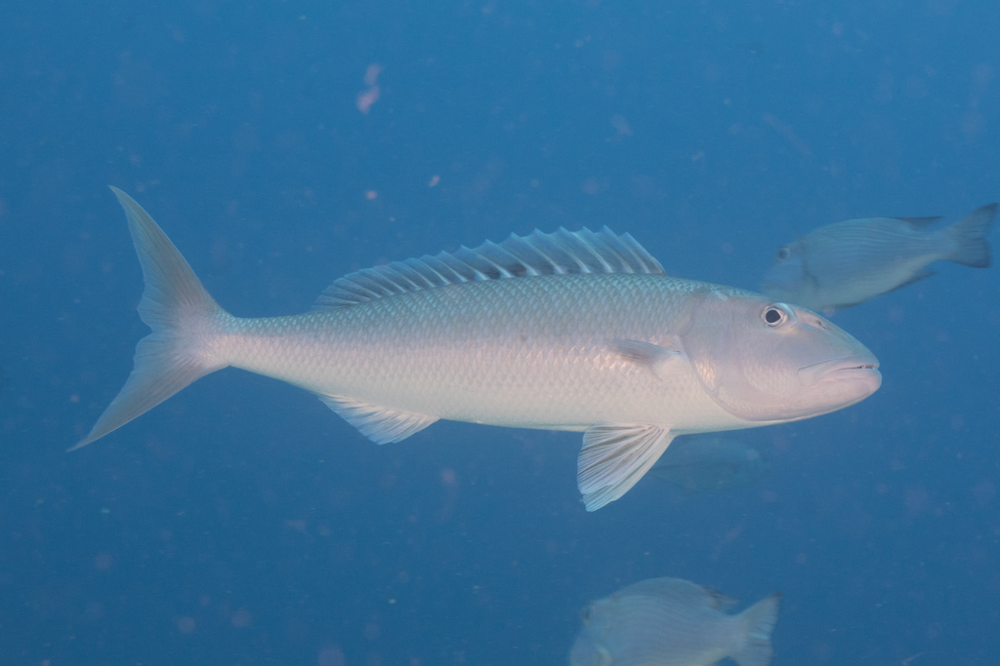
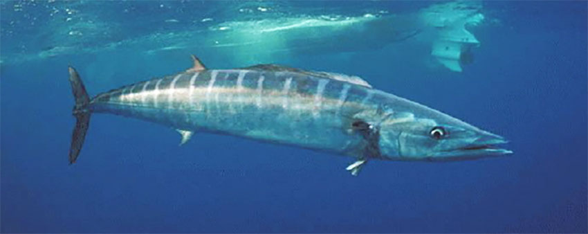
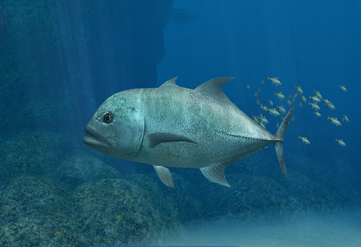
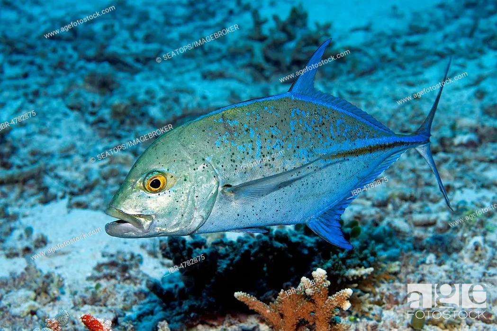
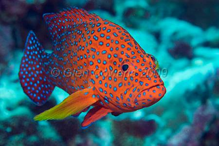
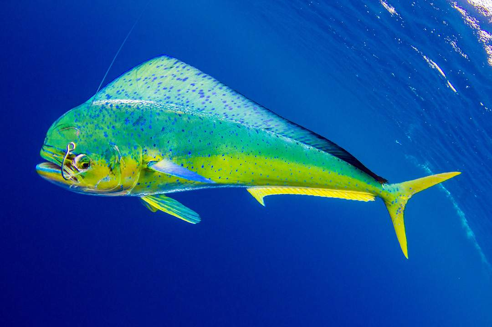
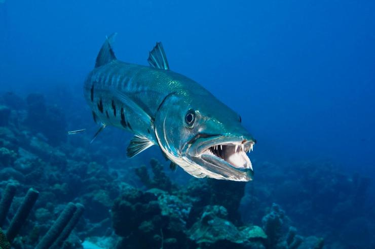
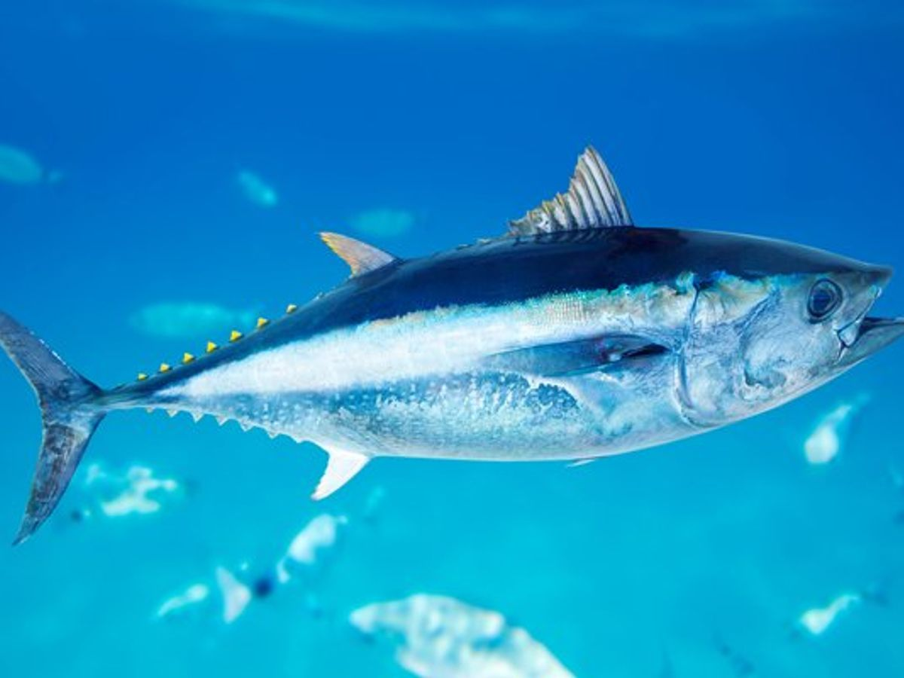
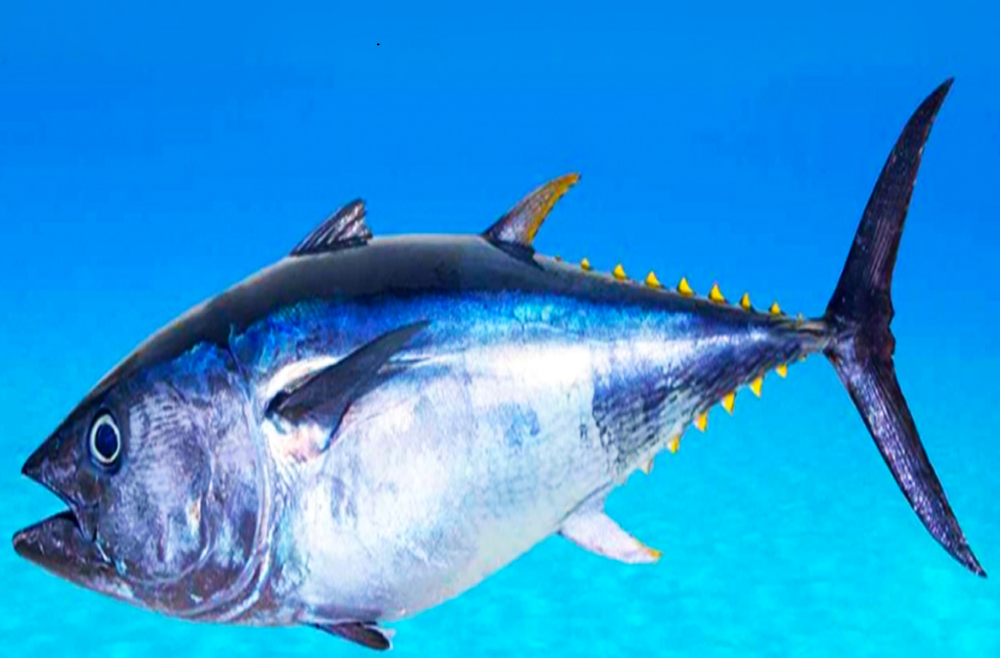

Scientific name: Aprion virescens
Mass: 8.5 kg (Adult)
Higher classification: Aprion Cuvier & Valenciennes, 1830
Order: Perch-like fishes
Phylum: Chordata
Rank: Species
Green Jobfish
The green jobfish, Aprion virescens, is a species of snapper native to the Indian and Pacific Oceans from the African
coast to the Hawaiian Islands.

Scientific name: Acanthocybium solandri
Conservation status: Least Concern (Population stable)
Family: Scombridae
Higher classification: Acanthocybium
Order: Scombriformes
Tribe: Scomberomorini
Wahoo
Wahoo is a scombrid fish found worldwide in tropical and subtropical seas. It is best known to sports fishermen,
as its speed and high-quality flesh makes it a prized and valued game fish.

Scientific name: Caranx ignobilis
Higher classification: Caranx
Family: Carangidae
Order: Carangiformes
Phylum: Chordata
Rank: Species
The Giant Trevally
The giant trevally, also known as the lowly trevally, barrier trevally, giant kingfish or ulua, is a species of large
marine fish classified in the jack family, Carangidae.

Scientific name: Caranx melampygus
Higher classification: Caranx
Order: Carangiformes
Phylum: Chordata
Rank: Species
Family: Carangidae
Blue Fin Trevally
The bluefin trevally, Caranx melampygus, is a species of large, widely distributed marine fish classified in the jack family,
Carangidae.Also known as the Blue Jack Fish.

Scientific name: Plectropomus leopardus
Mass: 13 kg (Adult)
Conservation status: Near Threatened (Population decreasing)
Higher classification: Plectropomus
Family: Serranidae
Order: Perch-like fishes
The Coral Trout
The leopard coral grouper, also known as the common coral trout, leopard coral trout, blue-dotted coral grouper or spotted
coral grouper, is a species of marine ray-finned fish.

Scientific name: Coryphaena hippurus
Mass: 22 kg (Adult)
Lifespan: 7 years
Length: 86 – 140 cm
Conservation status: Least Concern (Population stable)
Family: Coryphaenidae
dorado
The mahi-mahi or common dolphinfish is a surface-dwelling ray-finned fish found in off-shore temperate, tropical, and
subtropical waters worldwide.

Scientific name: Sphyraena
Mass: Great barracuda: 24 kg
Higher classification: Sphyraenidae
Family: Sphyraenidae; Rafinesque, 1815
Class: Actinopterygii
barracuda
A barracuda, or cuda for short, is a large, predatory, ray-finned fish known for its fearsome appearance and ferocious behaviour.
The barracuda is a saltwater fish of the genus Sphyraena, the only genus in the family.

Mass: 220 – 250 kg
Conservation status: Endangered (Population decreasing)
Scientific name: Thunnus thynnus
Order: Scombriformes
Class: Actinopterygii
Family: Scombridae
Atlantic bluefin tuna
The Atlantic bluefin tuna is a species of tuna in the family Scombridae. It is variously known as the northern bluefin tuna,
giant bluefin tuna [for individuals exceeding 150 kg ], and formerly as the tunny.

Scientific name: Katsuwonus pelamis
Mass: 19 kg (Adult)
Conservation status: Least Concern (Population stable)
Higher classification: Katsuwonus
Order: Scombriformes
Phylum: Chordata
Skipjack Tuna
The skipjack tuna is a medium-sized perciform fish in the tuna family, Scombridae. It is otherwise known as the balaya,
tongkol, arctic bonito, mushmouth, oceanic bonito, striped tuna, or victor fish.